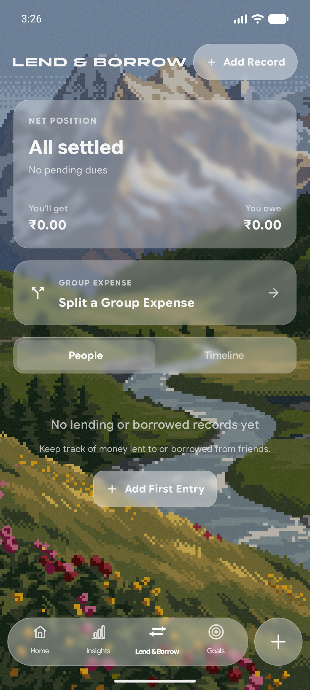

Brand & Media Resources
Kanri Press Kit
Official logos, screenshots, color palette, typography guidelines, and honest boilerplate copy for editors and writers.
About Kanri (Boilerplate)
One-Sentence Summary
Kanri is an offline-first, open-source personal finance ledger for Android that reads bank SMS and UPI notifications locally, keeping your financial records encrypted entirely on your device.
Short Boilerplate (50 Words)
Kanri (管理, "control") is an offline personal finance ledger for Android 8.0+. It parses Indian bank SMS and payment app notifications on-device, features 12 dot-matrix widgets, salary-synced budgets, peer-to-peer debt tracking, and SQLCipher AES-256 encryption. Kanri has zero ads, zero tracking SDKs, and requires zero user accounts.
Brand Assets & Logotypes

KANRI
Logotype Wordmark
Panchang Bold · Text Vector
Panchang Bold
Brand Color Palette
Cream Canvas
#FAF9F5
Ink Surface
#121212
Accent Green
#30A46C
Expense Red
#E5484D
High-Resolution Device Screenshots

Home Screen & Wallets

Insights & Heatmaps

Lend & Borrow Hub

Savings Goals Pacing
Brand Usage Rules
- Spelling: Always capitalize as Kanri (not KANRI or kanri in body prose). The Japanese kanji is 管理.
- Logotype: Do not stretch, skew, apply drop shadows, or place colorful gradient strokes on the Panchang wordmark.
- Honesty Policy: Do not invent press quotes, ratings, user counts, or awards. Kanri is an honest, developer-driven open-source project.